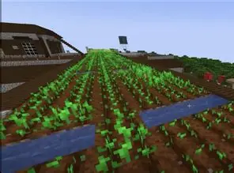
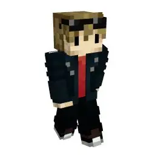
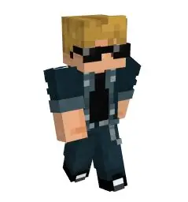
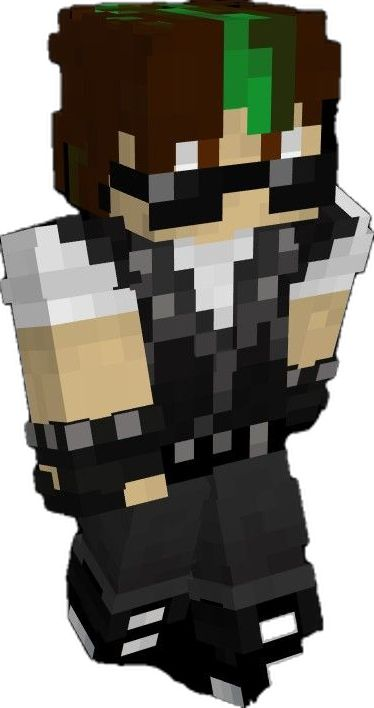

| Bad Boys Limited Life Stats | ||||
|---|---|---|---|---|
| Team Member | Overall Series Placement | Amount Of Deaths | Amount of Player Kills | Most Used Kill Tactic |
| Grian | 6th | 14 | 20 | TNT Minecart (11) |
| Jimmy SolidarityGaming | 14th | 12 | 4 | Ladder (1) / Ender Pearl (1) |
| Joel SmallishBeans | 12th | 16 | 14 | Diamond Axe (3) |


